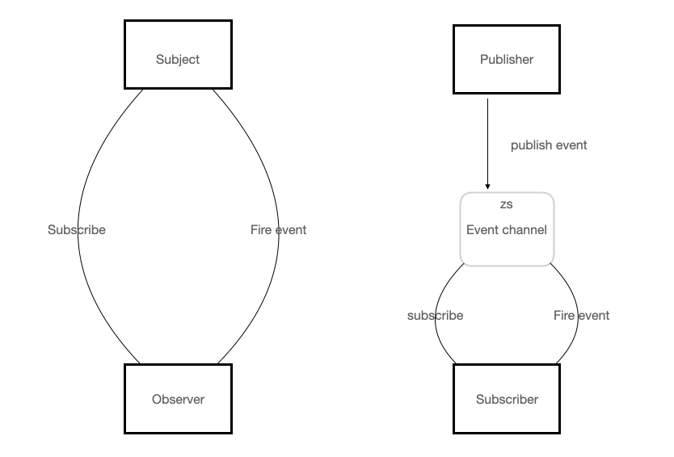

Vue 札记
Vue2 => JavaScript Framework

Basic Concepts
Vue 项目结构
- main.js => 程序入口 -> 实例化、初始化，指派插件并导入公共组件
// 完整写法 import Vue from "../node_modules/vue/dist/vue.js"
// import...from...的 from 命令后面可以跟很多路径格式,若只给出 vue, axios 这样的包名,则会自动到 node_modules 中加载;若给出相对路径及文件前缀，则到指定位置寻找
import Vue from 'vue'
import App from './App.vue'
import router from './router'
import store from './store'
Vue.config.productionTip = false
new Vue({ router, store, render: h => h(App) }).$mount('#app')
- App.vue => 主组件、页面入口文件。所有页面都是此进行切换
<template>
<div id="app">
<!-- 路由出口 -->
<router-view/>
<h1>App</h1>
</div>
</template>
<script>
export default { name: 'App' }
</script>
<style lang="less"></style>
- router/index.js => 注册路由组件到路由中
import Vue from 'vue'
import VueRouter from 'vue-router'
Vue.use(VueRouter)
const routes = []
const router = new VueRouter({ routes })
export default router
渲染函数 & JSX
h 函数是 createElement 函数的 ES6 语法缩写，源自 virtual-dom 源码中实现生成 HTML 结构的 hyperscript 脚本。render 函数是暴露给开发者使用 createElement 的钩子选项。createElement 函数用于生成 VNode 节点。
render: h => h(App)
render: function(createElement){ return createElement(App) }
const h = (tag, props, children) => {return {tag, props, children,...}}
渲染函数适合处理复杂逻辑，典型的推荐场景是当模板中要声明式渲染冗长的重复内容。
Component Classification
异步组件通常用于解决项目过大所导致的加载缓慢问题，重点是按需加载。注册异步组件的常规方式是 => 工厂函数返回配置化的组件对象、工厂函数返回 Promise 和工厂函数执行 resolve 回调。
路由组件按需加载基于 ES6 中模块化规范 import 动态加载，返回一个 Promise 对象。import 方法是异步的。
- 动态组件 => tab 切换时会涉及到组件动态加载
动态组件是使用 component 组件，通过特殊的 attribute
is实现。
<!-- 组件重新加载会消耗大量性能 -->
<component v-bind:is="currentTabComponent"></component>
<!-- 保持状态 -->
<transition><keep-alive><component v-bind:is="currentTabComponent"></component></keep-alive></transition>
动态组件通常会与 <keep-alive> 组件一并使用，保证组件切换时不丢失状态。
/* keep-alive property */
include - String | RegExp | Array => 名称匹配组件被缓存
exclude - String | RegExp | Array => 名称匹配组件不被缓存
max - Number | String => 最多可缓存的组件实例
对于缓存的组件，再次进入时，不会执行 created 或 mounted 等生命周期函数。
组件在 <keep-alive> 中切换，activated 和 deactivated 生命周期将会对应执行。
递归组件即组件在模板内递归调用自身，适合开发树型组件。设置组件名以调用自身，设置阈值是为避免抛出 "max stack size exceed" 的异常。
双向数据绑定
MVVM Model-View-ViewModel
早期页面是预先存放在服务器上的静态资源，相当于托管静态资源。随着页面与功能增加，通过 JS 修改服务器渲染后的数据已经不能再满足页面的交互需求。
app.use(express.static(path.join(__dirname, 'zspublic')));
模型-视图-视图模型是软件架构的设计模式，产生了 GUI Graphical user interface 图形用户界面以及促进了前后端的业务分离。
MVVM 的核心是以 JS、runtime、compiler 为集合的 ViewModel 视图模型层。向上与 View 视图层进行双向数据绑定，向下与 Model 层通过接口请求进行数据交互 (Ajax <=> JSON)。
Principle 原理
双向数据绑定的本质是数据劫持结合发布订阅模式，通过对需要 observe 的数据对象进行属性（包括子属性对象的属性）递归遍历，增加访问器和更改器。当被劫持对象的属性变动时，会触发相应的监听回调。
编译解析模板指令就是将模板中的变量替换成数据。在初始化渲染时将每个指令对应节点都绑定更新函数，添加监听数据的订阅者，在数据变动时就会收到通知以更新视图。
发布订阅模式是劫持和编译之间通信的桥梁，主要做的事情是在自身实例化时往属性订阅器 dep 里面添加自己，其自身必须有一个 update 方法，待属性变动 dep.notice 通知时，能调用自身的 update 方法，并触发 Compile 中绑定的回调，则功成身退。
MVVM 作为数据绑定的入口，整合 Observer、compile 和 Watcher 三者，通过 Observer
来监听自己的 model 数据变化，通过 Compile 来解析编译模板指令，最终利用 Watcher 搭起 Observer 和 Compile 之间的通信桥梁，达到数据变化 -＞视图更新；视图交互变化(input）-＞数据 model 变更的双向绑定效果。
- 数据劫持 => Object.defineProperty(obj, prop, descriptor)
Object.defineProperty() 方法会直接在一个对象上定义一个新属性，或者修改一个对象的现有属性，并返回此对象。
var zsobj = {};
Object.defineProperty(zsobj,'biubiubiu',{
// value: 23,
get: function () {
console.log('调用新定义的 biubiubiu 属性的 get 方法')
},
set: function(args){
console.log('调用新定义的 biubiubiu 属性的 set 方法, 传入的值是' + args);
}
});
zsobj.biubiubiu; // => 调用新定义的 biubiubiu 属性的 get 方法
zsobj.biubiubiu = 'zairesinatra' // 调用新定义的 biubiubiu 属性的 set 方法, 传入的值是zairesinatra
var zy = {};
Value = 23;
Object.defineProperty(zy, 'one', {
writable: true,
});
// 不能尝试混合两者: 数据描述符、访问器描述符
Object.defineProperty(zy, 'onee', {
get () { return console.log(Value) },
set (newValue) { Value = newValue; },
enumerable: true,
configurable: true
});
zy.onee // 23
zy.onee = '24'
zy.onee // 24
- 发布订阅模式
发布订阅模式和观察者模式很像。观察者模式中一个对象被修改时，则会自动通知依赖它的对象，即 obsevers 知道 subject 的事件，属于行为型模式；但是发布订阅模式的发布者和订阅者并不直接取得联系，通过类似于中间件（事件总线）的帮助下进行代理事件通信，传入消息并完成相应的分发。更多点此

- 实现双向绑定
<!DOCTYPE html>
<html lang="en">
<head>
<meta charset="UTF-8">
<meta http-equiv="X-UA-Compatible" content="IE=edge">
<meta name="viewport" content="width=device-width, initial-scale=1.0">
<title>mvvm</title>
</head>
<body>
<input type="text">
<span></span>
<script>
// 获取文档中的第一个DOM元素
let input = document.querySelector('input');
let span = document.querySelector('span');
// 建立 event channel
let obj = {};
let value = '';
Object.defineProperty(obj,'dataDescribe',{
configurable: true | false, // 如果是false则不可以删除
enumerable: true | false, // 如果为false则在枚举时候会忽略
writable: true | false // 如果为false则不可采用数据运算符进行赋值
});
Object.defineProperty(obj, 'zsget', {
set: function (newValue) {
// fire event
value = newValue
input.value = newValue
span.innerText = newValue
},
get: function () {
return value
}
})
input.addEventListener('keyup',(e) => {
obj.zsget = e.target.value
})
input.value = obj.zsget
span.innerText = obj.zsget
</script>
</body>
</html>

- 数据代理
通过一个对象代理对另一个对象中属性的操作（读、写）称为数据代理。
let obj1 = {x:100}
let obj2 = {y:200}
Object.defineProperty(obj2, 'x', {
get(){ return obj1.x },
set(value){ obj1.x = value }
})
// obj2.x = 1
// obj2.x // 1
Vue 中数据代理通过 vm 对象来代理 data 对象中属性的操作，可以更方便的操作 data 中的数据（不必在花括号写 _data.属性）。Object.defineProperty() 把 data 对象中所有属性添加到 vm 上，为每一个添加到 vm 上的属性都指定一个 getter 和 setter。在 getter 和 setter 内部去操作 data 中对应的属性。
<!DOCTYPE html>
<html lang="en">
<head>
<meta charset="UTF-8">
<meta http-equiv="X-UA-Compatible" content="IE=edge">
<meta name="viewport" content="width=device-width, initial-scale=1.0">
<title>data proxy</title>
</head>
<body>
<div id="root">
<h2>name: {{name}}</h2>
<h2>address: {{address}}</h2>
</div>
</body>
<script src="https://cdn.jsdelivr.net/npm/vue@2.6.14/dist/vue.js"></script>
<script>
let data = {
name: 'zszy',
address: 'cs'
}
const vm = new Vue({
el: '#root',
data
})
console.log(vm._data === data) // true -> vm._data === vm.options.data === data
console.log(vm.name === vm._data.name); // 进行 vm._data.name = 'zyzy' 后 vm.name 变为 zyzy
</script>
</html>

Diff 算法和虚拟 DOM
避免新增内容引起整个 DOM 树的重新渲染，而只针对改动区域重新更新。精细化对比，最小量更新的 Diff (from different) 运营而生。
虚拟 DOM 是通过 snabbdom.js 库实现的，考虑到源码由 TypeScript 编写，可以通过 npm 下载使用 build 编译出来的 JavaScript 版 snabbdom 库。
# snabbdom => 3.0.3
npm i -S snabbdom
snabbdom 库是 DOM 库，不能在 nodejs 环境运行，所以需要搭建 webpack 和 webpack-dev-server 开发环境（不需安装任何loader）理解实现过程。
npm i -D webpack webpack-cli webpack-dev-server
[webpack-cli] You need to install 'webpack-dev-server' for running 'webpack serve'.
Error: Cannot find module 'webpack-dev-server'
Require stack:
- /Users/$/node_modules/@webpack-cli/serve/lib/index.js
- /Users/$/node_modules/webpack-cli/lib/webpack-cli.js
- /Users/$/node_modules/webpack-cli/lib/bootstrap.js
- /Users/$/node_modules/webpack-cli/bin/cli.js
- /Users/$/zairesinatra/fullStack/study-snabbdom/node_modules/webpack/bin/webpack.js
如果安装过程省略依赖会出现找不到目标文件并向上层目录继续寻找的报错。这里表示没有安装 webpack-cli 。在 webpack@3 版本里 webpack 和 webpack-cli 是在同一个包中，但在 ^4 版本两者已经分开。
配置 webpack.config.js 文件
const path = require('path')
// const HtmlWebpackPlugin = require('html-webpack-plugin');
module.exports = {
// 入口
entry: './src/index.js',
// 出口
output: {
// 虚拟打包路径，就是说文件夹不会真正生成，而是在 8080 端口虚拟生成，不会真正的物理生成
publicPath: '/virtual',
// 打包出来的文件名
filename: 'bundle.js'
},
devServer: {
// 端口号
port: 8080,
// 静态资源文件夹
contentBase: 'www'
}
}
终端运行 npx webpack serve 启动项目，访问：http://localhost:8080/ 和 http://127.0.0.1:8080/virtual/bundle.js， 可以看到 www/index.html 和 xuni/bundle.js 文件的内容。
在 html 文件创建 id 为 container 的 DOM 节点并引入 bundle.js 。如果没有成功创建节点会出现 Uncaught TypeError: Cannot read property 'sel' of null snabbdom 的 console 面板报错（div 写在了 script 标签之后）。
zairesinatra
<div id="container"></div>
<script src="/virtual/bundle.js"></script>
在 index.js 中引入 snabbdom 。主要完成 compile（把真实 DOM 编译成 Vnode ）、diff（比较 oldVnode 和 newVnode 区别）、patch（补丁更新真实 DOM ）的工作。
console.log("zsxzy's bundle.js import completed");
import {
init,
classModule,
propsModule,
styleModule,
eventListenersModule,
h,
} from "snabbdom";
const patch = init([
// Init patch function with chosen modules
classModule, // makes it easy to toggle classes
propsModule, // for setting properties on DOM elements
styleModule, // handles styling on elements with support for animations
eventListenersModule, // attaches event listeners
]);
const container = document.getElementById("container");
const vnode = h("div#container.two.classes", { on: { click: function(){} } }, [
h("span", { style: { fontWeight: "bold" } }, "This is bold"),
" and this is just normal text",
h("a", { props: { href: "/foo" } }, "I'll take you places!"),
]);
// Patch into empty DOM element – this modifies the DOM as a side effect
patch(container, vnode);
const newVnode = h(
"div#container.two.classes",
{ on: { click: function(){} } },
[
h(
"span",
{ style: { fontWeight: "normal", fontStyle: "italic" } },
"This is now italic type"
),
" and this is still just normal text",
h("a", { props: { href: "/bar" } }, "I'll take you places!"),
]
);
// Second `patch` invocation
patch(vnode, newVnode); // Snabbdom efficiently updates the old view to the new state

虚拟 DOM 是用 JavaScript 对象描述 DOM 的层次结构。在 DOM 中的一切属性都能从虚拟 DOM 中找到对应。sel(selector) 表示元素选择器、data 表示元素属性、children 表示元素子节点、elm 表示该元素对应的真正的DOM节点（若值是 undefined 则未上树）、key 为节点唯一标识、text 文本内容。
diff 是发生在虚拟 DOM 上的：新虚拟 DOM 和老虚拟 DOM 进行 diff （精细化比较），计算最小量更新反映到真实的 DOM 上。key 是节点的唯一标识，告诉 diff 算法在更改前后是否为同一个 DOM 节点。只有是选择器相同且 key 相同的同一个虚拟节点，才进行虚拟化比较，否则就是暴力删除旧的、插入新的。最后注意的是 diff 算法只进行同层比较，不会进行跨层比较。
通过 h 函数传参数产生一个虚拟节点 (vnode) 对象用来描述真实的 DOM 。h('a', { props: { href: 'https://blog.zairesinatra.com', target: '_blank' } }, 'blog') 可生成此类虚拟节点 { "sel": "a", "data": { "props": { "href": "https://blog.zairesinatra.com" } }, "text": "zsxzy" }。h 函数中可以进行子节点的嵌套。
手写实现简易 diff 算法代码如下。
// vnode.js
export default function (sel, data, children, text, elm) {
const key = data.key;
return { sel, data, children, text, elm, key }
}
// h 函数(强制接受3个参数、弱重置功能)
// 封装 vnode 函数并抽离后导入
import vnode from './vnode'
// 形态可能: h('div', {}, '文字')\h('div', {}, [])\h('div', {}, h())
export default function (sel, data, c) {
if (arguments.length !== 3)
throw new Error('此 h 函数强制传入 3 个参数')
if (typeof c === 'string' || typeof c === 'number') {
return vnode(sel, data, undefined, c, undefined)
} else if (Array.isArray(c)) {
let children = []
for (let i = 0; i < c.length; i++) {
if (!(typeof c[i] === 'object' && c[i].hasOwnProperty('sel'))){
throw new Error('传入的数组参数中有不是 h 函数的项')
}
children.push(c[i])
}
return vnode(sel, data, children, undefined, undefined)
} else if (typeof c === 'object' && c.hasOwnProperty('sel')) {
let children = [c]
return vnode(sel, data, children, undefined, undefined)
} else {
throw new Error('传入的第三个参数类型不对')
}
}
// createElement 函数
// 真正创建节点, 将 vnode 创建为 DOM , 但未上树
export default function createElement(vnode) {
// 创建由 tagName 指定的 HTML 元素节点
let domNode = document.createElement(vnode.sel);
// 仅论述子节点是文本或 children 情况
if (vnode.text !== '' && (vnode.children === undefined || vnode.children.length === 0)) {
domNode.innerText = vnode.text;
} else if (Array.isArray(vnode.children) && vnode.children.length > 0) {
// children 情况递归创建节点
for (let i = 0; i < vnode.children.length; i++) {
let ch = vnode.children[i];
let chDom = createElement(ch);
domNode.appendChild(chDom);
}
}
// 补充纯 DOM 对象 —— elm 属性, 并返回
vnode.elm = domNode;
return vnode.elm;
}
// patch 函数
import vnode from './vnode'
import patchVnode from './patchVnode'
import createElement from './createElement'
export default function patch(oldVnode, newVnode) {
// 判断旧节点是 DOM 节点还是虚拟节点, DOM 节点需要包装为虚拟节点
if (oldVnode.sel === '' || oldVnode.sel === undefined) {
oldVnode = vnode(oldVnode.tagName.toLowerCase(), {}, [], undefined, oldVnode);
}
// 判断 oldVnode 和 newVnode 是否同一个节点
if (oldVnode.key === newVnode.key && oldVnode.sel === newVnode.sel) {
// 同一个节点情况较多, 封装函数
patchVnode(oldVnode, newVnode);
} else {
// 不是同一个节点, 暴力插新删旧
let newVnodeElm = createElement(newVnode);
if (oldVnode.elm && newVnodeElm) {
oldVnode.elm.parentNode.insertBefore(newVnodeElm, oldVnode.elm);
}
oldVnode.elm.parentNode.removeChild(oldVnode.elm);
}
}
// patchVnode.js
import createElement from './createElement'
export default function patchVnode(oldVnode, newVnode) {
// 判断新旧 vnode 是否为同一个对象
if (oldVnode === newVnode) {return}
// 若 newVnode 有 text 属性
if (
newVnode.text != undefined &&
(newVnode.children === undefined || newVnode.children.length === 0)
) {
if (newVnode.text != oldVnode.text) {
// innerText 产生重排, 直接覆盖 oldVnode.elm 故不必考虑 children 情况
oldVnode.elm.innerText = newVnode.text;
}
} else {
// newVnode 没有 text 属性 => 有children
// 判断 oldVnode 有无 children
if (oldVnode.children !== undefined && oldVnode.children.length > 0) {
// 此时是最复杂的情况 —— oldVnode、newVnode 都有 children 属性
// 仅书写新增节点的逻辑, 不考虑删除和更新节点的实现
let un = 0;
for (let i = 0; i < newVnode.children.length; i++) {
const ch = newVnode.children[i]
let isExist = false;
for (let j = 0; j < oldVnode.children.length; j++) {
const oldCh = oldVnode.children[j];
if (oldCh.sel === ch.sel && oldCh.key === ch.key) {
isExist = true;
}
}
if (!isExist) {
const dom = createElement(ch);
ch.elm = dom;
if (un < oldVnode.children.length) {
oldVnode.elm.insertBefore(dom, oldVnode.children[un].elm);
} else {
oldVnode.elm.appendChild(dom);
}
} else {
un++;
}
}
} else {
// 清空 oldVnode 的内容, 遍历 newVnode 子节点, 创建 DOM 并上树
oldVnode.elm.innerText = '';
for (let i = 0; i < newVnode.children.length; i++) {
const dom = createElement(newVnode.children[i]);
oldVnode.elm.appendChild(dom);
}
}
}
}
diff 算法的子节点更新策略 —— 四种命中查找：新前与旧前、新后与旧后、新后与旧前（旧前指向的节点，移动到旧后之后）、新前与旧后（旧后指向的节点，移动到旧前之前）。上述查找方式命中一种就不在进行判断，若一种未命中则需要使用循环寻找。
手写对应 snabbdom 源码简易子节点更新策略如下。
// updateChildren.js
import createElement from './createElement'
import patchVnode from './patchVnode'
// 判断是否同一个虚拟节点
function checkSameVnode(a, b) {
return a.sel === b.sel && a.key === b.key;
}
export default function updateChildren(parentElm, oldCh, newCh) {
let oldStartIdx = 0, newStartIdx = 0, oldEndIdx = oldCh.length - 1, newEndIdx = newCh.length - 1, oldStartVnode = oldCh[oldStartIdx], oldEndVnode = oldCh[oldEndIdx], newStartVnode = newCh[newStartIdx], newEndVnode = newCh[newEndIdx], keyMap = null; // 旧前、新前、旧后、新后、旧前节点、旧后节点、新前节点、新后节点、Map映射
while (oldStartIdx <= oldEndIdx && newStartIdx <= newEndIdx) {
// 略过已加 undefined 标记节点
if (oldStartVnode === null || oldCh[oldStartIdx] === undefined) {
oldStartVnode = oldCh[++oldStartIdx];
} else if (oldEndVnode === null || oldCh[oldEndIdx] === undefined) {
oldEndVnode = oldCh[--oldEndIdx];
} else if (newStartVnode === null || newCh[newStartIdx] === undefined) {
newStartVnode = newCh[++newStartIdx];
} else if (newEndVnode === null || newCh[newEndIdx] === undefined) {
newEndVnode = newCh[--newEndIdx];
} else if (checkSameVnode(oldStartVnode, newStartVnode)) { // 判断命中开始
patchVnode(oldStartVnode, newStartVnode);
oldStartVnode = oldCh[++oldStartIdx];
newStartVnode = newCh[++newStartIdx];
} else if (checkSameVnode(oldEndVnode, newEndVnode)) {
patchVnode(oldEndVnode, newEndVnode);
oldEndVnode = oldCh[--oldEndIdx];
newEndVnode = newCh[--newEndIdx];
} else if (checkSameVnode(oldStartVnode, newEndVnode)) {
patchVnode(oldStartVnode, newEndVnode);
parentElm.appendChild(oldStartVnode.elm, oldEndVnode.elm.nextSibling);
oldStartVnode = oldCh[++oldStartIdx];
newEndVnode = newCh[--newEndIdx];
} else if (checkSameVnode(oldEndVnode, newStartVnode)) {
patchVnode(oldEndVnode, newStartVnode);
parentElm.insertBefore(oldEndVnode.elm, oldStartVnode.elm);
oldEndVnode = oldCh[--oldEndIdx];
newStartVnode = newCh[++newStartIdx];
} else {
// 四种命中都没有找到则制作 keyMap 缓存 —— 快速遍历
if (!keyMap) {
keyMap = {};
// 从 oldStartIdx 开始，到oldEndIdx结束，创建keyMap映射对象
for (let i = oldStartIdx; i <= oldEndIdx; i++) {
const key = oldCh[i].key;
if (key !== undefined) {
keyMap[key] = i;
}
}
}
// 寻找当前这项 newStartIdx 这项在 keyMap 中映射的序号
const idxInOld = keyMap[newStartVnode.key]
if (idxInOld === undefined) {
// idxInOld 是 undefined 表示全新的项
// 被加入的项 (newStartVnode) 现在不是真实的DOM
parentElm.insertBefore(createElement(newStartVnode), oldStartVnode.elm);
} else {
// idxInOld 不是 undefined 表示不是全新的项, 需移动
const elmToMove = oldCh[idxInOld];
patchVnode(elmToMove, newStartVnode)
// 把这项设置为 undefined 表示已处理完
oldCh[idxInOld] = undefined;
// 移动调用 insertBefore
parentElm.insertBefore(elmToMove.elm, oldStartVnode.elm);
}
// 指针下移, 仅移动新的头
newStartVnode = newCh[++newStartIdx];
}
}
// 继续看有无剩余、循环结束时 newStartIdx 比 newEndIdx 小
if (newStartIdx <= newEndIdx) {
// new 还有剩余节点没有处理
for (let i = newStartIdx; i <= newEndIdx; i++) {
// insertBefore 可以自动识别 null, 如果是 null 就会自动排到队尾.和appendChild是一致的
parentElm.insertBefore(createElement(newCh[i]), oldCh[oldStartIdx].elm);
}
} else if (oldStartIdx <= oldEndIdx) {
// old 还有剩余节点没有处理
for (let i = oldStartIdx; i <= oldEndIdx; i++) {
if (oldCh[i]) {
parentElm.removeChild(oldCh[i].elm);
}
}
}
}
Vue CLI
Vue CLI 是一个基于 Vue.js 进行快速开发的完整系统。由三部分组成：CLI (@vue/cli)、CLI 服务 (@vue/cli-service)、CLI 插件。CLI (@vue/cli)
# 快速原型开发
vue serve
# 创建 vue 项目
vue create
# 进入 vue 可视化管理界面
vue ui
例如对单个 *.vue 文件进行快速原型开发：需要在 npm install -g @vue/cli-service-global 之后才可进行使用 vue serve 启动项目。
可以借助 npm 进行 Vue 项目的启动和打包等操作，例如： npm run serve 启动项目；npm run build 打包项目。同时在启动 React 项目的时候使用的是 npm start；在打包 React 项目的时候也是使用的 npm run build；但是创建 React项目的是使用的 React 自己的脚手架 create-react-app ；Vue使用的命令是 vue create。
CLI 服务 (@vue/cli-service) 是一个 开发环境 依赖。本质是一个 npm 包，局部安装在每个 @vue/cli 创建的项目中。
在一个 Vue CLI 项目中，@vue/cli-service 安装了一个名为 vue-cli-service 的命令。可以在 npm scripts 中以 vue-cli-service、或者从终端中以 ./node_modules/.bin/vue-cli-service 访问这个命令。
// 使用默认 preset 的项目的 package.json
{
"scripts": {
"serve": "vue-cli-service serve",
"build": "vue-cli-service build"
}
}
// 通过 npm 调用这些 script
npm run serve
npm run build
// 使用 npx (最新版的 npm 应该已经自带)调用
npx vue-cli-service serve
CLI 插件是向 Vue 项目提供可选功能的 npm 包，例如 Babel/TypeScript 转译、ESLint 集成等。
其中 CLI 插件的名字以 @vue/cli-plugin- (xxx)开头，在 package.json 中可查看。
当在项目内部运行 vue-cli-service 命令时，它会自动解析并加载 package.json 中列出的所有 CLI 插件。
VueRouter
Quick Start
路由即路径和组件的对应关系，route 和 router 之间可以看作是路由和路由器的关系，route 由 router 进行管理，由于前者通常具有多个，故常写成 routes。路由的主要作用是实现单页面应用导航区与展示区的切换功能。
路由广义上分为前端路由以及后端路由，前端路由依靠锚链接，一种实现同一页面定位不同资源节点的特殊超链接；后端路由通过服务器实现资源分发，相比于前者性能较低。
vue-router 是 vue 用来实现单页面应用的插件库。单页面应用有且只有一个完整的页面；点击页面中的导航链接不会刷新页面，只会做页面的局部更新；数据需要通过 ajax 请求获取。
Vue Router 配置步骤：
<!--1. 引入库文件,在全局 window 对象上挂载 VueRouter 构造函数-->
<script src="lib/vue-router_3.0.2.js"></script>
// 2. 加入默认渲染成超链接的 router 链接 (to属性渲染为 href 属性)
<router-link to="/zs">toZs</router-link>
// 3. 设置路由占位符(路由填充位)
<router-view></router-view>
// 4. 定义router's component模板
// 若动态参数较多以及需要换行考虑模板字符串``
var Haizeiwang = {template:"<div>It's a test</div>"}
// 5. 创建VueRouter实例并配置规则
var myRouter = new VueRouter({routes:
[{path:"/zs",component:Haizeiwang},...]})
// component后接组件名非string切忌""
// 6. 路由挂载实例
var app = new Vue({el:"#app",router:myRouter})
嵌套路由：
嵌套路由就是在路由实例中存在其他路由：
- 被嵌套的路由组件模板中需新增的路由链接与路由占位符，这里有涉及换行，避免转译麻烦则使用ES6新增的模板字符串代替
"； - 路由实例的配置文件中通过 children 数组添加子路由规则
动态路由：
携带具有规律动态变化的参数的路由规则匹配，重点在动态参数、规则匹配。主要设置地方是创建路由实例对象的规则配置域中。
<!--示例代码如下：-->
<router-link to="/zairesinatra/1">xx</router-link>
<router-link to="/zairesinatra/2">zz</router-link>
<router-link to="/zairesinatra/3">yy</router-link>
......
<!--而配置文件不必写为-->
{path:'/zairesinatra/1',component:xx}
{path:'/zairesinatra/2',component:zz}
{path:'/zairesinatra/3',component:yy}
......
可简写为：
// 路由规则配置中：
var myRouter = new VueRouter({
//routes是路由规则数组
routes: [
//通过/:参数名 的形式传递参数
{ path: "/zairesinatra/:id", component: 组件名 },})
// 路由组件中
const Zs = {
//路由组件中通过$route.params对象来获取路由参数
template:'<div>zairesinatra{{$route.params.id}}</div>'
}
而时常被诟病与路由高度耦合的的$route.params.id可换成props：
// 路由组件模板
// 通过props来接收参数
var Zs = {
props:["id"],
template:"<div>num：{{id}}</div>"
}
// 路由实例与配置域
var myRouter = new VueRouter({
//routes是路由规则数组
routes: [
// 通过/:参数名的形式传递参数
// 如果props设置为true，则route.params将会被设置为组件属性
{ path: "/zairesinatra/:id", component: Zs, props:true },...]})
同时注意：如果是传递静态参数，props设置为对象；传递复杂参数时，props设置为箭头函数路由模板应使用mustache传值，且路由实例中props设置为带参数(route)箭头函数,返回值中动态项无需添加$，直接route.params.id即可。
Additional considerations
v-bind:Function & .sync
<template>
<div>
<BindFunc :parentHandler="parentHandler" />
<SyncModefier v-bind:sync-data.sync="syncData" :data-to-be-modified="dataToBeModified" @setDataToBeModified="res => dataToBeModified = res" />
<div>{{dataToBeModified}}</div>
<div>{{syncData}}</div>
</div>
</template>
<script>
import BindFunc from './components/BindFunc.vue'
import SyncModefier from './components/SyncModifier.vue'
export default {
components: {
BindFunc,
SyncModefier
},
data () {
return {
dataToBeModified: 'value of dataToBeModified',
syncData: 'value of syncData'
}
},
methods: {
parentHandler () {
console.log('这是父组件的方法')
}
}
}
</script>
<template>
<div>SyncModefier => {{ syncData }} => {{ dataToBeModified }}</div>
</template>
<script>
export default {
name: 'SyncModefier',
props: {
dataToBeModified: {
type: String,
default: () => {
return 'yes dataToBeModified default'
}
},
syncData: {
type: String,
// default: "yes syncData default"
default: () => {
return 'yes syncData default'
}
}
},
mounted () {
this.$emit('setDataToBeModified', 'hello sync')
this.$emit('update:syncData', 'hello syncData')
}
}
</script>
<template>
<div>
<button @click="handler">子组件的按钮 => 测试父组件向子组件传递函数方法</button>
</div>
</template>
<script>
export default {
name: 'BindFunc',
props: {
parentHandler: {
type: Function,
default: () => {
return Function
}
}
},
methods: {
handler () {
this.parentHandler()
}
}
}
</script>
命名风格
模板字面量是允许嵌入表达式的字符串字面量，在 ES2015 规范前被称为模板字符串。模板字符串使用反引号 `` 来代替普通字符串中的用双引号和单引号，且包含特定语法（${expression}）的占位符。
JSX 是 JavaScript 的语法扩充，允许在 JS 中使用 HTML 的标签。
测试一下测试一下测试一下测试一下测试一下测试一下测试一下测试一下测试一下测试一下测试一下测试一下测试一下测试一下
单文件组件、JSX 和模板字符串中支持 PascalCase、kebab-case 风格；DOM 模板中仅支持 kebab-case 风格。
DOM 模板直接参与浏览器解析渲染，而模板字符串需要通过 Vue 将其编译转换成真正的 HTML 代码。
okkk
nextTick
测试一下测试一下测试一下测试一下测试一下测试一下测试一下测试一下测试一下测试一下测试一下
全局 API Vue.nextTick( [callback, context] ) 和实例方法 vm.$nextTick( [callback] ) 都是在下次 DOM 更新循环结束之后执行延迟回调，不同的是后者回调的 this 会自动绑定到调用此方法的实例上。
BUG 分析
title优化 ✔️
针对不同打包环境展示不同内容，通过插件方式区别定义后报错如下:
Template execution failed: ReferenceError: ❌... is not defined
ReferenceError: ❌... is not defined
- index.html:7 eval
[.]/[cli-service]/[html-webpack-plugin]/lib/loader.js!./public/index.html:7:
<%= htmlWebpackPlugin.options.isProd ? '' : 'dev - ' %> 在注入模板字符串语法后，注释内容的不规范所导致。
- vue-ui新建项目 ✔️
初始化项目时删除 hello.vue 后，在 app.vue 导入组件热编译运行报错:
This relative module was not found:
* ../views/About.vue in ./src/router/index.js
项目中安装 router 依赖，需要及时更新 router 中对应的 index.js 相关初始化配置，指向 app.vue。
- warning ❓
"无法解析" 的警告出现几率较为频繁，但是并不影响运行。详情移步
WARN
Couldn't parse bundle asset "/Users/.../zsvuex/dist/js/chunk-vendors.js".
Analyzer will use module sizes from stats file.
- echarts ✔️
使用 Echarts 可视化图表，在按照官方文档说明进行敲代码时，遇见如下报错:
[Echarts] TypeError: Cannot read property 'init' of undefined
var myChart = echarts.init(document.getElementById('main')); 定位到存在 init 报错的位置。方法出现 undefined 考虑此调用对象的声明定义是否成功。补充代码 var echarts = require('echarts');。
- import ✔️
引入 vant 组件库出现报错
error Import in body of module; reorder to top import/first
代码格式规范要求所有的 import 在顶部，中间不允许出现其他代码，如vue.use(vant)。
- PostCSS Error ✔️
npm install postcss-pxtorem -D 下载将 px 转化为 rem 单位的插件出现报错:
Syntax Error: Error: PostCSS plugin postcss-pxtorem requires PostCSS 8.
Migration guide for end-users:
https://github.com/postcss/postcss/wiki/PostCSS-8-for-end-users
@ ./src/style/index.less ...
@ ./src/main.js
@ multi (webpack)-dev-server/client?http://192.xxx.xxx.2:8080&sockPath=/sockjs-node (webpack)/hot/dev-server.js ./src/main.js
由于 postcss-pxtorem 版本过高，放弃了对旧 Node.js 版本的支持。考虑到 PostCSS 8 未带来重大的 API 更改。先执行: npm uninstall postcss-pxtorem 卸载当前版本。在 package.json 中 devDependencies 下添加"postcss-pxtorem": "^5.1.1"，执行 npm i 安装制定版本包。
- ElementUI 按需加载后启动项目时的 babel-preset-es2015 报错。
项目使用 @vue/cli 4.5.x 脚手架工具构建，根据官方文档中的提示按需引入。babelrc 和 babel.config.js 的区别在于，前者只会影响本项目中的代码，而后者会影响整个项目中的代码，包含 node_modules。
// 出错配置
module.exports = {
"presets": [
'@vue/cli-plugin-babel/preset',["es2015", { "modules": false }]
],
"plugins": [
[
"component",
{
"libraryName": "element-ui",
"styleLibraryName": "theme-chalk"
}
]
]
}
// Error
Cannot find module 'babel-preset-es2015'
修改 babel.config.js 文件，将 es2015 改为 @babel/preset-env。
// 正解配置
module.exports = {
"presets": [
'@vue/cli-plugin-babel/preset',["@babel/preset-env", { "modules": false }]
],
"plugins": [
[
"component",
{
"libraryName": "element-ui",
"styleLibraryName": "theme-chalk"
}
]
]
}
- 引入字体
将后缀名为 .ttf、.otf、.eot 等格式的字体包放入新建的 fonts 文件夹，并创建一个 fonts.css 文件用于定义所用字体。在 app.vue 中引入 fonts.css。
@font-face: {
font-family: 'xxxyyy';
/* 重命名字体名 */
src: url('./xxxxxx.otf');
font-weight: normal;
font-style: normal;
}
<style lang="scss">
@import './assets/fonts/fonts.css';
#app {
font-family: 'xxxyyy';
font-weight: normal;
}
</style>
结束
本博客所有文章除特别声明外，均采用 CC BY-SA 4.0 协议 ，转载请注明出处！